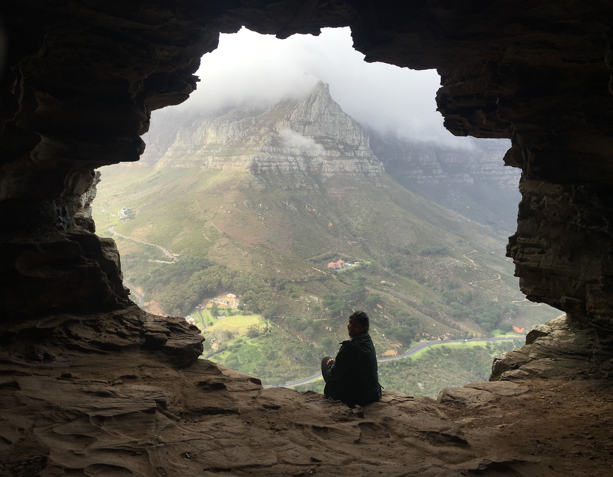
Wally's Cave, Cape Town
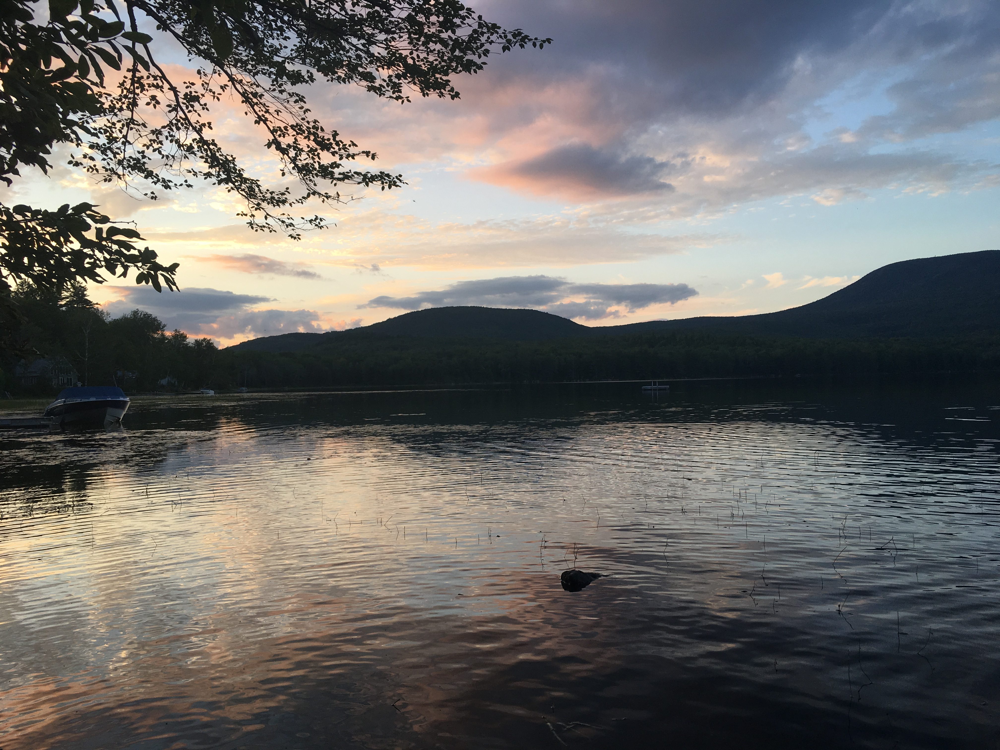
Hanover, NH
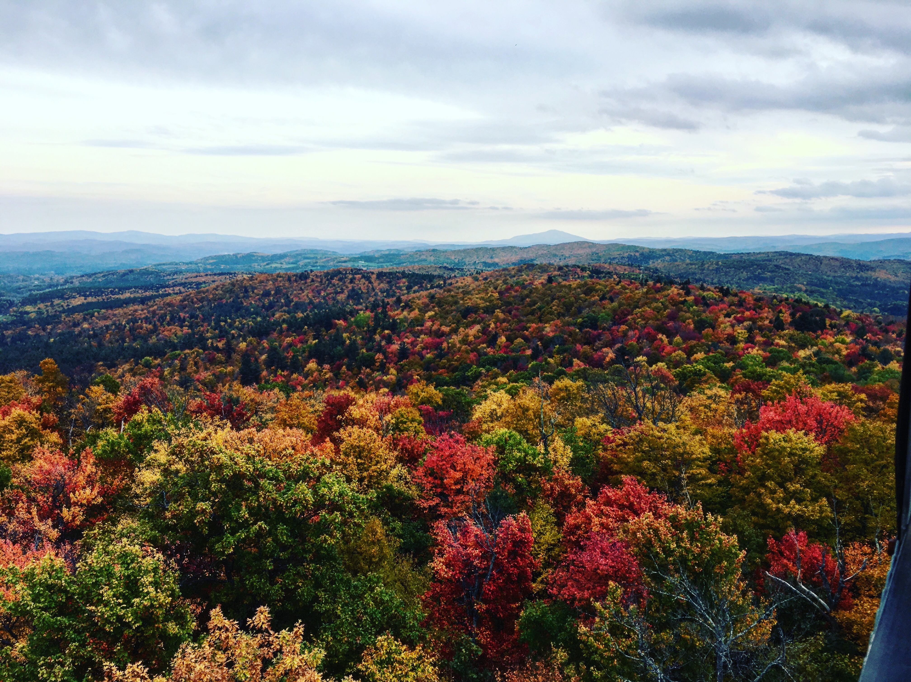
Gile Mountain, NH
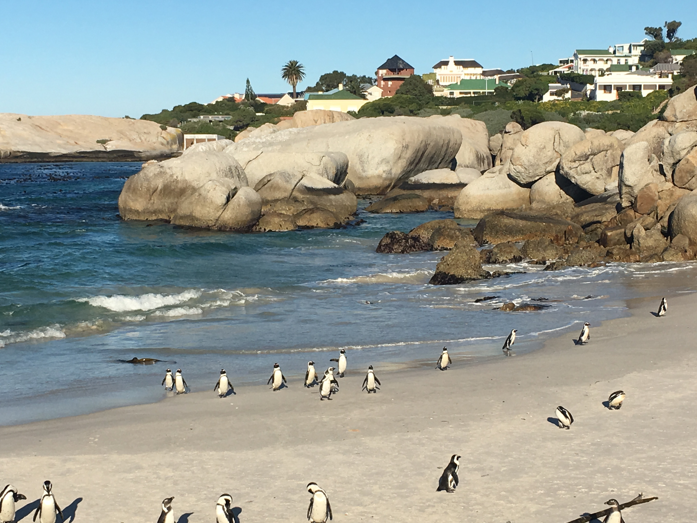
Boulder's Beach, Cape Town
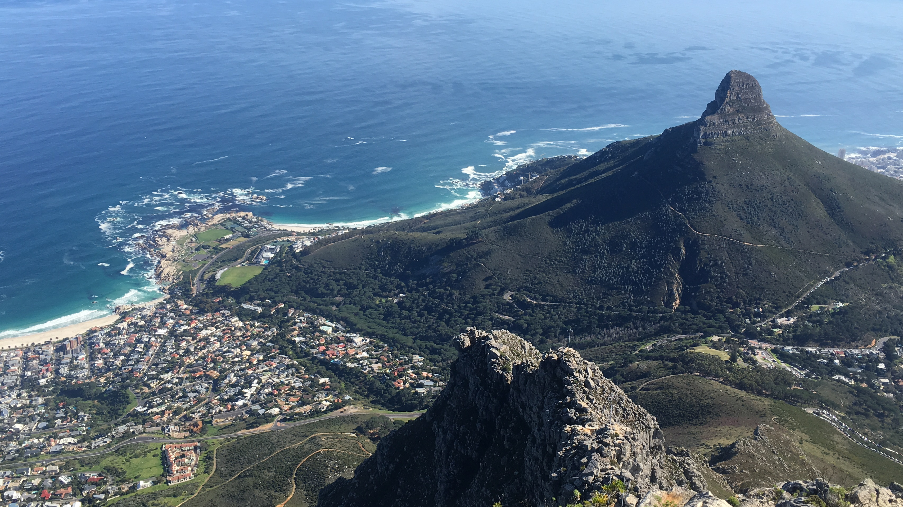
Table Mountain, Cape Town
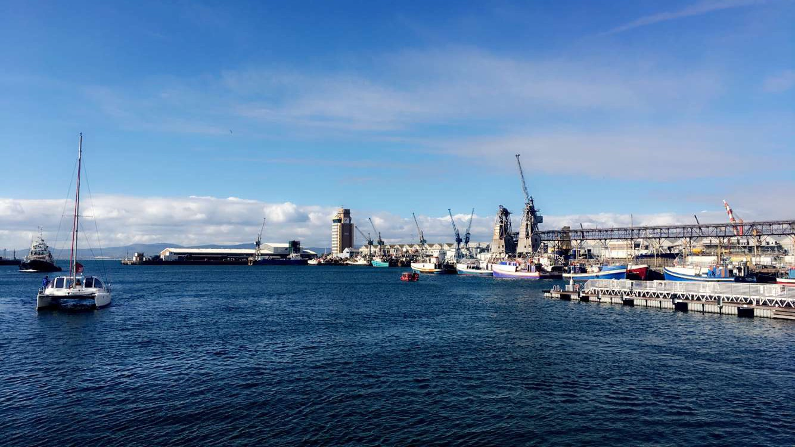
V&A Waterfront, Cape Town
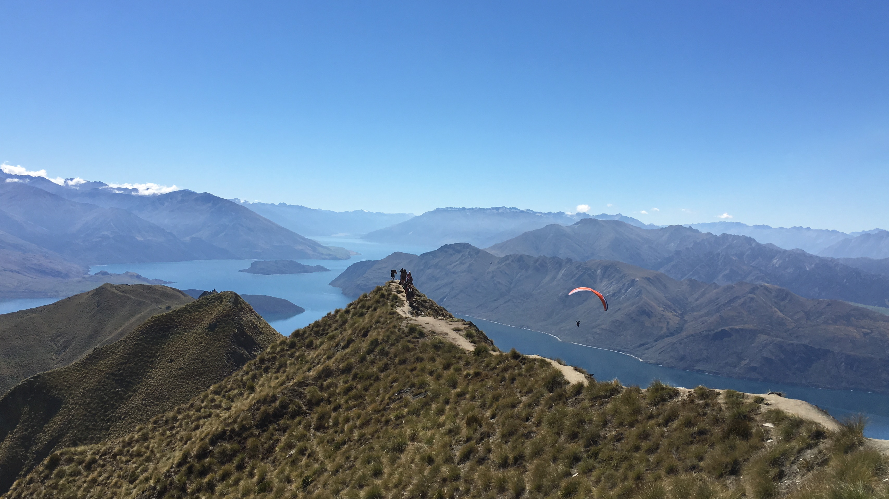
Roy's Peak New Zealand (South Island)
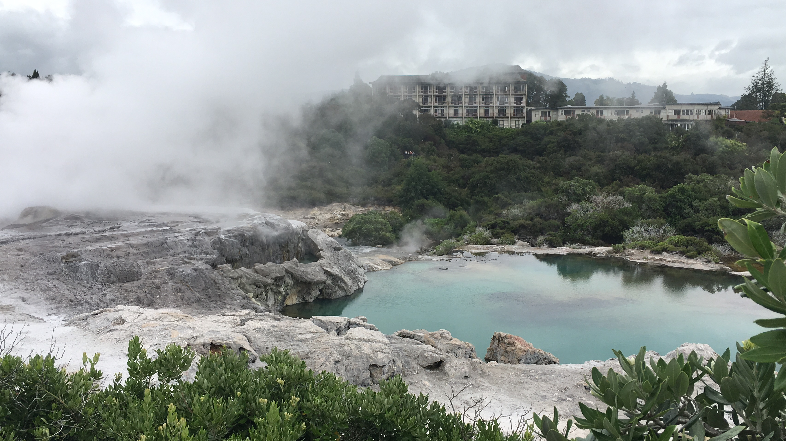
Te Puia Springs, New Zealand (North Island)
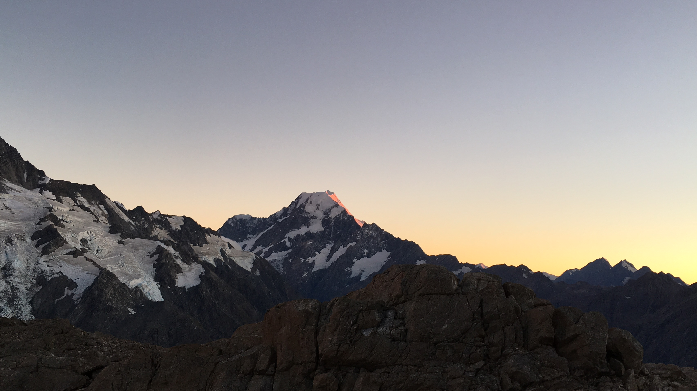
Mount Aoraki/Cook pt. 1 New Zealand (South Island)
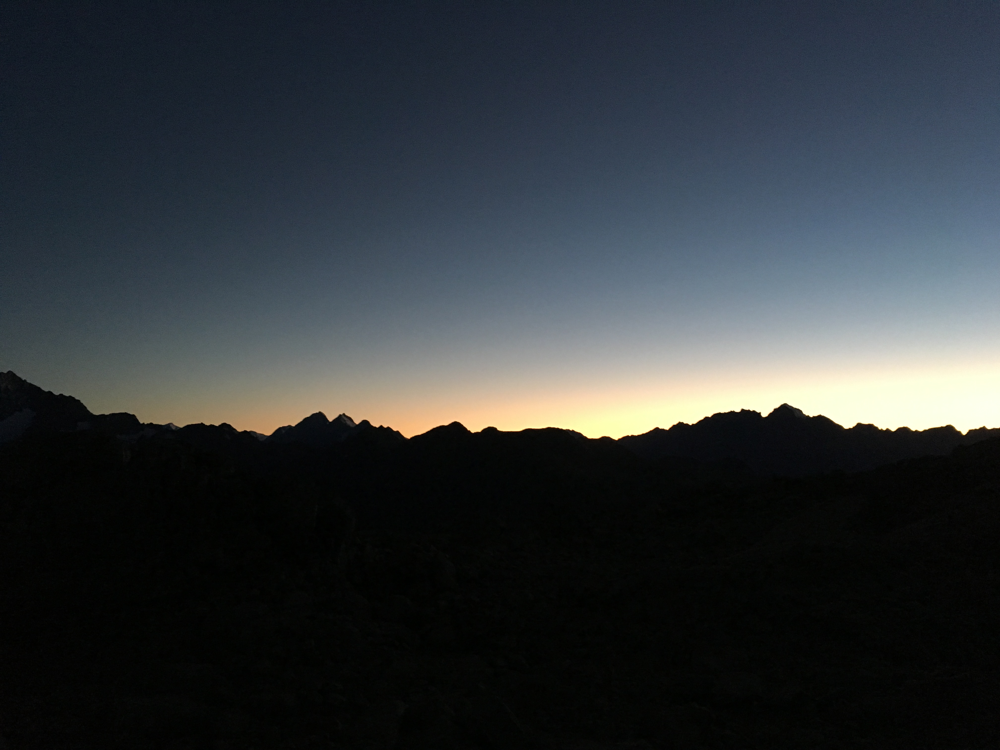
Mount Aoraki/Cook pt. 2 New Zealand (South Island)
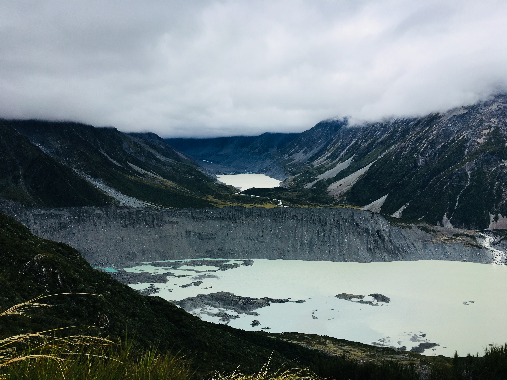
Mount Aoraki/Cook pt. 3 New Zealand (South Island)
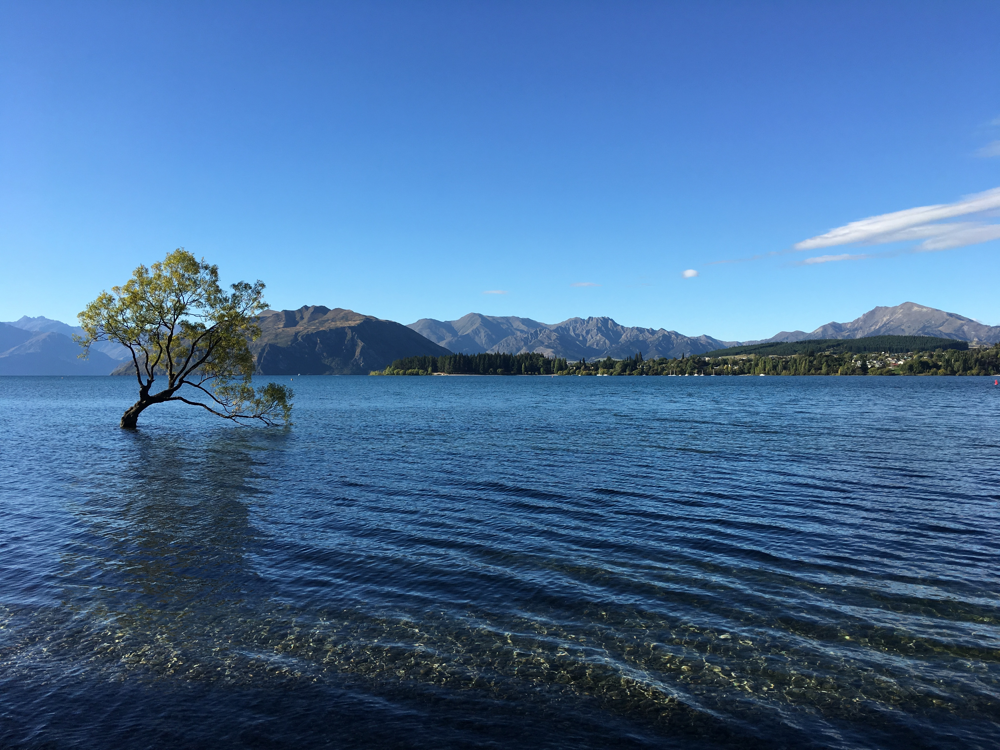
Lake Wanaka, New Zealand (South Island)
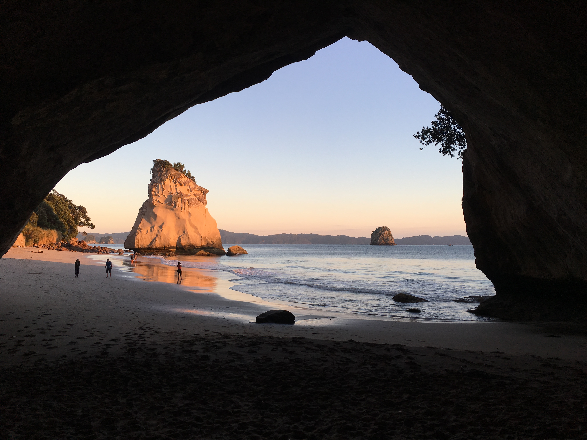
Cathedral Cove pt. 1, New Zealand (South Island)
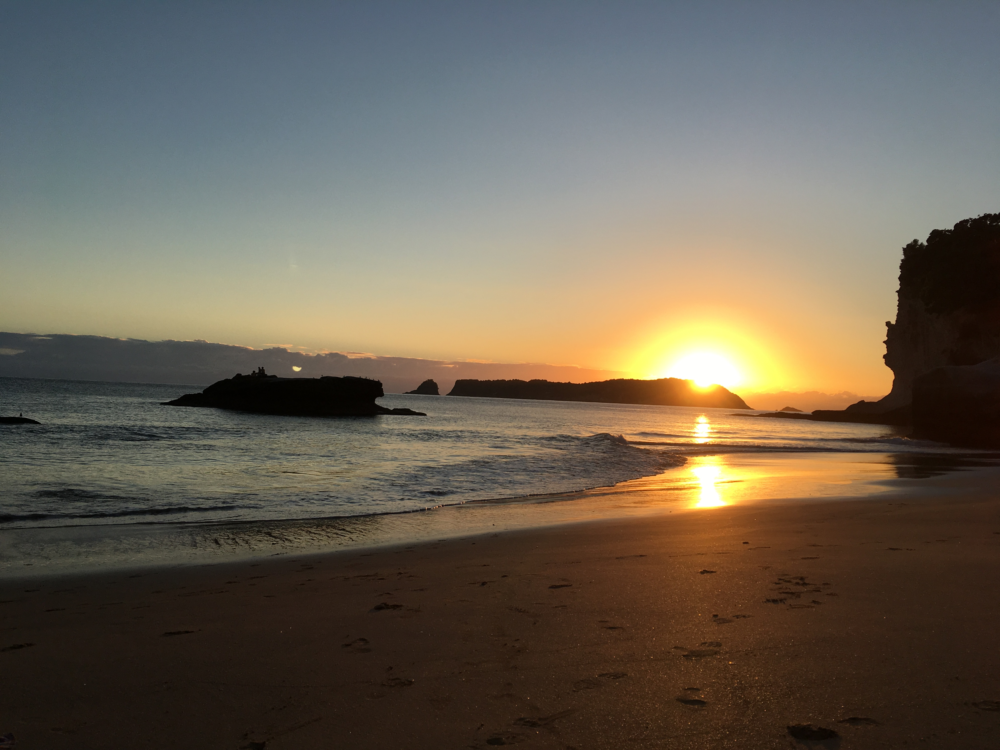